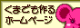
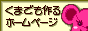

To the right are a bunch of websites and other links that I either
quite enjoy, or find very useful! This will be updated VERY soon with
a longer, filtered list of a bunch of my bookmarked pages!
cools sites!


Resource Websites!

 

Others!

Graphics
Masterpost collection of Animal Crossing sprites
A website that has recovered, repaired, and reuploaded Photoshop resources from lost personal blogs from the mid-2000's
A huge gallery of anime scans and art organized through tags and categories
Another website with galleries for anime scans, wallpapers, and user artwork
Layouts
Nostalgic anime-themed 2000's layouts
A lot of web layouts, tutorials, and assets! (Some dls/links may not work)
A website with old noaastalgic web layouts, photoshop tutorials, and more
Coding
A rentry full of HTML/CSS tutorials
The code in order to have draggable divs! The site itself also has many other jQuery tutorials and stuff
TONS of code beautifiers and code converters
Various tutorials for html, css, etc. Some interesting tools, as well!
Javascript, Jquery, and other tutorials!
Cursors, desktop icons, etc. Not all of them are very sightly, but fun to explore regardless
Utilities
Code pastebin for quickly sharing snippits of codes to others for a temporary period of time
A bunch of cool gradients!
A script you can bookmark and use to identify the font used for text on a webpage
Another script you can bookmark to strip the color from a webpage, blur content, etc.
Data/list delimit items with this tool, wrap them with a tag or wrap each one with their own, plus more